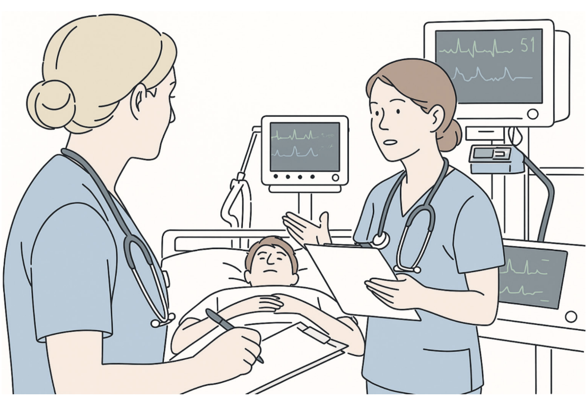

Patient & Clinician-Centred Design
I collaborate with social scientists, HCI scientists, and patient/community organisations to co-design AI systems with patients and clinicians that are genuinely acceptable and adaptable in practice.
Patient and Clinician Centered Design
AI systems co-designed with patients and clinicians. Developed with HCI researchers and social scientists.
-

Interested in a collaboration? Get in touch → · ← Back to Research